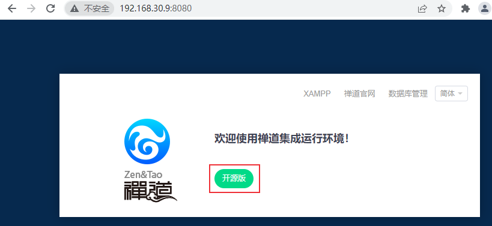
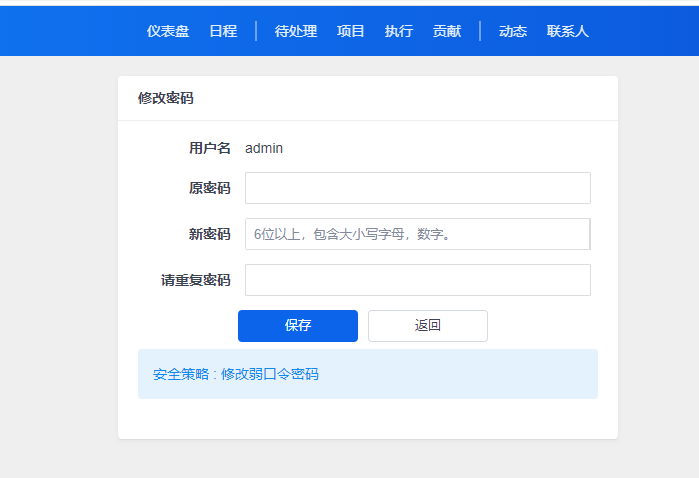
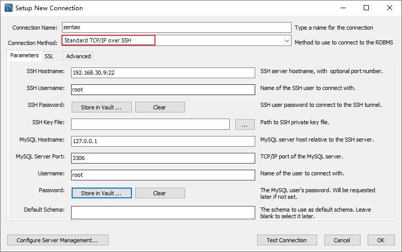
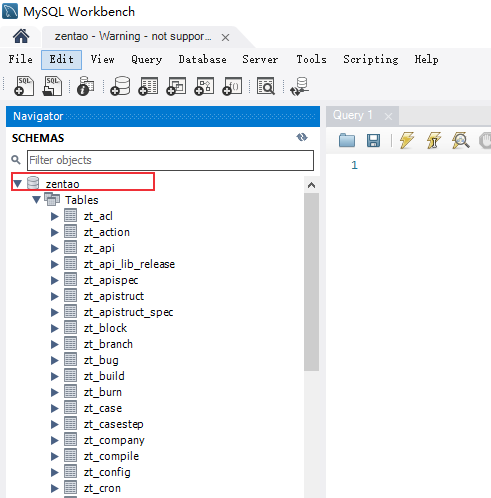
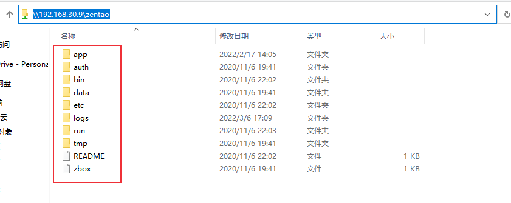
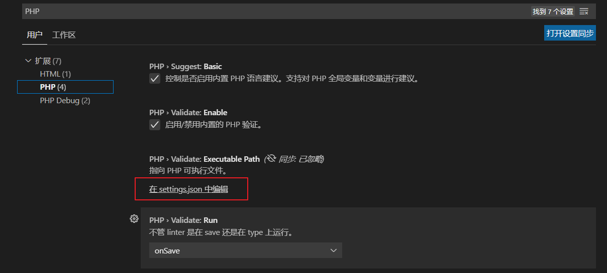
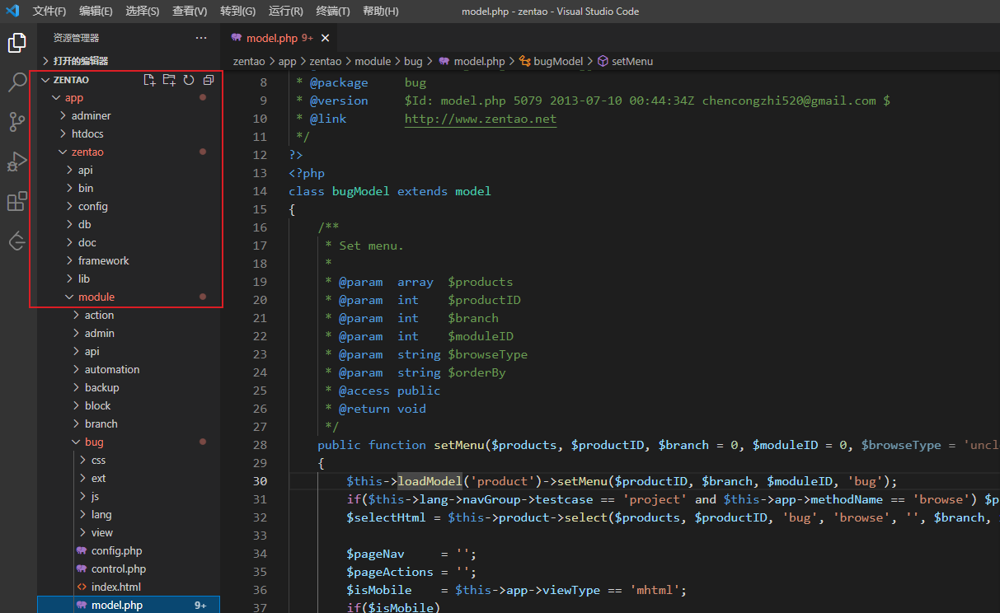

禅道是一个开源的项目管理软件，作为测试人员最常用的功能就是用例管理和bug管理。目前的禅道开源版可能无法满足业务需求，可以基于禅道进行二次开发。先来介绍下如何配置禅道开发环境。
前言
禅道项目管理软件主要使用PHP语言，是基于zentaoPHP框架进行开发的。要对禅道进行二次开发需要对PHP语言、zentaoPHP框架、前端ZUI框架、MySQL数据库、HTML、JavaScript等有一定的了解。后续我会陆续发布一些禅道二次开发的相关笔记，文章不会对这些基础进行过多介绍，关于禅道二次开发的相关资料可滑到文章末尾查看，都是禅道官方提供的资料，介绍的比较详细。
下面介绍我是如何配置禅道开发环境的。
禅道环境部署
在Windows中部署PHP环境可以使用XAMPP，它是一个Apache发行版，其中包含了MariaDB、PHP和Perl。下载地址：
由于我们的禅道部署在Linux系统上，我选择在Linux上部署环境。Linux也可以使用XAMPP部署，我觉得太麻烦就没有使用它，而是直接在Linux上安装禅道，因为禅道安装包内置了apache、php、mysql这些应用程序，不需要再单独安装部署。直接在禅道目录中进行二次开发就可以了。
禅道安装
在linux中使用禅道一键安装包安装禅道，下载地址：https://www.zentao.net/download.html ，我下载的是禅道16.4版本。
1、将禅道一键安装包解压到/opt目录下
1 | $ sudo tar -zxvf ZenTaoPMS.16.4.zbox_64.tar.gz -C /opt |
解压完成后可以查看PHP的版本：1
2
3
4
5
6$ /opt/zbox/bin/php -v
PHP 7.2.33 (cli) (built: Jul 14 2021 12:01:31) ( ZTS )
Copyright (c) 1997-2018 The PHP Group
Zend Engine v3.2.0, Copyright (c) 1998-2018 Zend Technologies
with the ionCube PHP Loader + ionCube24 v10.4.4, Copyright (c) 2002-2020, by ionCube Ltd.
with Zend OPcache v7.2.33, Copyright (c) 1999-2018, by Zend Technologies
2、设置Apache和MySQL的端口号
可以使用 /opt/zbox/zbox -h 命令查看帮助信息：
1 | $ /opt/zbox/zbox -h |
设置端口：
1 | $ /opt/zbox/zbox -ap 8080 -mp 3306 |
其中 -ap 参数设置Apache端口，-mp 参数设置Mysql端口。
3、关闭防火墙
查看防⽕火墙状态
1 | $ systemctl status firewalld |
停⽌止firewall
1 | $ systemctl stop firewalld.service |
禁止firewall开机启动
1 | $ systemctl disable firewalld.service |
关闭selinux：vi /etc/selinux/config，注释掉 SELINUX=enforcing，添加 SELINUX=disabled
4、启动禅道
1 | $ /opt/zbox/zbox start |
停止禅道命令：1
$ /opt/zbox/zbox stop
重启：
1 | $ /opt/zbox/zbox restart |
可以设置一下开机自动启动，把 /opt/zbox/zbox restart 命令添加/etc/rc.d/rc.local 文件，并添加执行权限：
1 | $ chmod +x /etc/rc.d/rc.local |
禅道启动成功后，浏览器访问：http://192.168.30.9:8080/ ，其中192.168.30.9为我的服务器地址，8080为apache端口。

禅道默认管理员帐号是 admin，密码 123456。登录后需要修改登录密码：

禅道升级
如果禅道使用linux一键安装包安装，可按照以下步骤升级：
1、下载新版本的源码包 ZenTaoPMS.16.4.zip
2、解压缩后得到zentaopms文件夹，将zentaopms/下面的所有文件复制到 /opt/zbox/app/zentao/ 下面，覆盖同名文件：
1 | $ unzip ZenTaoPMS.16.4.zip |
2、打开Mysql Workbench客户端工具，新建连接
先用SSH通道连接上服务器，再连接禅道数据库

3、连接数据库

这样就可以对禅道数据库进行操作了。
命令行连接和导入数据库方法：
登录数据库：
/opt/zbox/bin/mysql -u root -P 3306 -p导入数据库：
/opt/zbox/bin/mysql -u root -P 3306 -p zentao < zentao.sql
配置linux和windows文件共享
为了方便开发，我选择在Windows上使用vscode编辑器进行开发。我的解决方案是使用samba来配置linux和windows的文件共享。安装方法可参考使用samba实现linux和windows文件共享。
vi /etc/samba/smb.conf ：
1 | [global] |
设置用户名和密码：smbpasswd -a root
1 | $ smbpasswd -a root |
启动 smb.service 和 nmb.service两个服务
1 | systemctl start smb.service |
设置开机启动
1 | systemctl enable smb.service |
windows访问地址 \\192.168.30.9\zentao

Vscode 配置PHP开发环境
如果要在Windows中编写PHP脚本，需要配置一下settings.json文件，配置PHP执行文件php.exe的路径。
点击VSCode的 文件 -> 首选项 -> 设置，搜索php

点击setting.json，添加配置：
1 | "php.validate.executablePath": "D:/xampp/php/php.exe", |
安装插件PHP Debug用于PHP调试，如果是禅道二次开发可以不用配置它，修改代码后刷新禅道页面，会看到修改后的效果。
另外推荐安装PHP Intelephense插件，可用于方法跳转。
接下来可以在Vscode中打开共享的zentao文件夹：

为了方便开发建议对zentao目录进行版本管理。
参考资料
- 禅道官网：https://www.zentao.net/
- 禅道下载：https://www.zentao.net/download
- 禅道安装教程：https://www.zentao.net/book/zentaopmshelp/90.html
- 禅道升级：https://www.zentao.net/book/zentaopmshelp/41.html
- 禅道二次开发讲解：https://www.zentao.net/publicclass/80237.html
- 二次开发机制：https://www.zentao.net/book/zentaopmshelp/225.html
世间所有的相遇，都是久别重逢。——《一代宗师》
本文标题:禅道二次开发（一）：开发环境配置
文章作者:hiyo
文章链接:https://hiyongz.github.io/posts/zentao-extension-for-dev-environment-configuration/
许可协议:本博客文章除特别声明外，均采用CC BY-NC-ND 4.0 许可协议。转载请保留原文链接及作者。